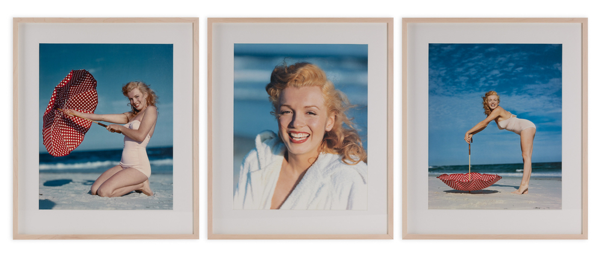

Twice each year, the Leitz Photographica Auction offers a lucrative collection of vintage photographs, cameras and accessories to interested buyers from around the world. The 41st auction, held at Vienna’s Hotel Bristol, saw bidders compete for a variety of lots that included prints of Marilyn Monroe and a number of military cameras – ultimately raising over €600,000.
The three prints of a young Marilyn Monroe were some of the first rare photographs to be sold at the Leitz auction in three years. The images, captured by Hollywood photographer André de Dienes in 1949, see Monroe posing on Tobay Beach, Long Island. The prints, originally estimated at under €8,000, sold for €15,600, with all proceeds going to the Austrian charity ‘Licht ins Dunkel’ (‘Light into Darkness’).
